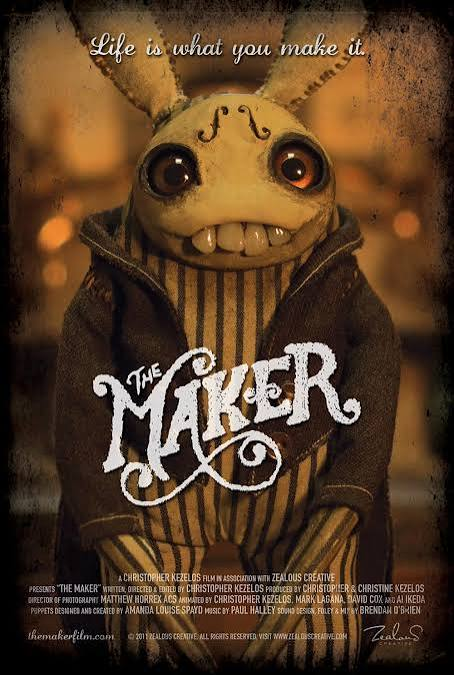

Tears of Steel is a live-action/CGI short film by producer Ton Roosendaal and director/writer Ian Hubert. It chronicles a meeting between two people, recreated from the past, in attempt to stop the present robot apocalypse. this Sci-fi action drama includes no major gore and is rated TV-14